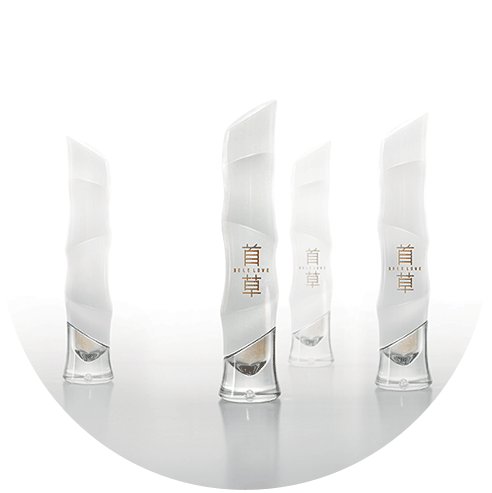

| 铁皮石斛超微纯粉 |
铁皮石斛超微纯粉是应用粉体工程中的高新技术，由精选的铁皮枫斗经低温超音速气流粉碎而成的纯天然滋补品。粉碎粒径达至细胞破壁级，使其细胞内蕴含的精华成分易于释放和吸收，大幅提高了有效成分的溶出率、生物利用率和药理活性，降低了三倍以上的服用量，革新铁皮石斛人体吸收新极限。
 |
制作方法 | |
精选纯正铁皮石斛茎枝，洗净、烘焙、软化、搓揉、扭制螺旋状、固定、低温干燥、灭菌后，经高新设备粉碎成粉，无任何添加剂、防腐剂。
|
主要成份 | |
石斛多糖、石斛碱、氨基酸、微量元素及具有抗癌活性的菲类、联苄类化合物等。
|
主要功效 | |
铁皮石斛自古被尊列为“中华九大仙草之首”的滋补圣品。据《神农本草经》、《本草纲目》、《中药大辞典》等中医经典详载：其脂膏丰盈，滋阴之力最大，归经全面。除滋阴清热、益胃生精、润补五脏虚劳等功效外，另据现代医学临床研究表明，更具保肝护胆、补脾养胃、益肾安神、抗氧化、提高人体SOD水平、清除自由基，增强人体免疫力、抗衰老、抑制肿瘤等显著功效，久服厚肠胃、轻身延年、驻颜养容。
|
适宜人群 | |
以女性美容养颜、滋阴补虚为主。另商业应酬男士，中老年人，免疫功能低下，“三高”（高血糖高血脂高血压）人群及压力过大、工作过劳、熬夜加班、生活不规律导致的亚健康人群和需辅助治疗的肿瘤患者等皆宜服用。